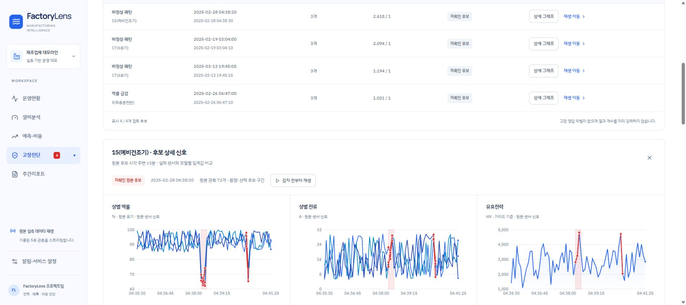

더 잘 읽히는 화면,
고장 발생 지점으로 이어지는 재생
흰색과 파란색으로 화면을 통일하고, 실시간 차트의 시간 범위와 이상 후보 재생 동작을 개선했습니다.
2026-10-15 · 로컬 데모 반영 대시보드 열기
UI/UX 평가와 반영 내용
기존 화면은 짙은 사이드바·녹색 강조·미색 배경이 혼재했고, 작은 조작 글자와 과도하게 굵은 제목 때문에 정보의 우선순위가 고르게 전달되지 않았습니다. 긴 진단 근거와 날짜 조작부의 줄바꿈도 정리했습니다.
| 평가 항목 | 개선 전 | 개선 후 |
|---|---|---|
| 배경과 강조 | 짙은 남색·녹색·미색 혼재 | 흰 카드, 연한 파란 배경·사이드바, 파란 선택 상태 |
| 내비게이션 / 기본 버튼 | 12px / 10px | 14px / 13px · 조회 버튼 12px |
| 페이지 제목 | 26px · 굵기 750 | 29px · 굵기 600, 모바일 25px |
| 본문과 긴 근거 | 9–11px 보조 글자, 긴 원문 노출 | 본문 14px, 한국어 핵심값 요약 + 원문 접기, 보고서 행간 1.75 |
| 줄바꿈과 좁은 화면 | 날짜·재생 조작부 밀집 | 날짜와 조작부 재배치, 단어 단위 줄바꿈, 큰 표는 내부 가로 스크롤 |
| 색의 의미 | 상태 강조색 혼용 | 정상·연결·선택은 파랑, 이상 후보·오류는 빨강, 미설정은 회색 |
글자 크기는 데스크톱 브라우저의 계산된 스타일 기준입니다. 보조 설명은 11–12px를 사용하며, 키보드 포커스와 버튼 상태도 함께 정리했습니다.
스트리밍: 최신 관측을 기준으로 움직이는 5분 창
가로축 시작점을 고정하지 않고 새로운 관측이 들어올 때마다 양 끝을 함께 이동합니다. 양 끝을 포함하면 최대 61개 관측 시각이며, 눈금은 60초 간격으로 표시합니다. 아직 5분이 쌓이지 않은 시작 구간은 과거를 빈 영역으로 둡니다.
새로운 재생 세션으로 이동하면 이전 세션의 차트 이력을 이어 붙이지 않습니다. 영속 수집 로그는 보존합니다. 명시적으로 기간을 지정한 과거 조회는 선택한 전체 기간을 보여 줍니다.
고장진단: 후보를 누르면 감지 30초 전부터 자동 재생
현재 스트리밍 구간 밖의 후보도 서버에서 해당 시각의 원본 데이터를 다시 읽습니다. 후보의 첫 감지 시각 − 30초를 새 재생 시작점으로 설정하고, 해당 모듈과 관련 센서 화면을 선택한 뒤 자동 재생합니다.
| 검증한 원본 후보 | 첫 감지 | 자동 재생 시작 |
|---|---|---|
| 15 · 예비건조기 · 비정상 패턴 | 2025-02-28 04:38:20 | 2025-02-28 04:37:50 |
| 17 · 6호기 · 비정상 패턴 | 2025-02-19 03:04:00 | 2025-02-19 03:03:30 |
| 17 · 6호기 · 비정상 패턴 | 2025-03-13 19:45:05 | 2025-03-13 19:44:35 |
| 5 · 좌측분전반 · 역률 급감 | 2025-02-26 06:47:00 | 2025-02-26 06:46:30 |
이상 후보 관측은 빨간 점·선, 선택한 후보 구간은 붉은 음영으로 표시합니다. 규칙·AE·Isolation Forest 상세 차트도 임계값 초과 지점을 붉게 표시합니다.
증강 시연은 시작점을 옮겨도 원래의 변형 기준 시각과 고장 원인을 유지합니다. 저장 알람의 식별자도 보존해 같은 후보가 재생 이동 때문에 새 고장으로 중복 등록되지 않도록 했습니다.
붉은 표시는 검토가 필요한 이상 후보입니다. 실제 삽입 고장 정답 라벨이 추가된 것은 아니며, 고장 확정을 의미하지 않습니다.
검증과 확인 자료
- 프로덕션 Vite 빌드 성공. 배포된 파일:
index-BwTlLOYF.js/index-Q7vJeuK6.css. - 서버 회귀 검증 22개 통과: 원본 후보 4개, 정확한 30초 전 이동, 새 세션 자동 재생, 잘못된 ID 처리, 증강 시각 유지, 60간격 초과 스트리밍, 13모듈 정렬.
- 실제 브라우저에서 61관측·300초·양 끝 눈금, 과거 시간 조회 3,600점 전체 표시, 후보 상세의 센서·진단 차트 붉은 표시를 확인했습니다.
- 독립 브라우저 검사에서도 4개 원본 후보 모두 현재 범위 밖의 4월 조회 상태에서 자동 재생으로 이동하고, 날짜 필터 해제·5초 원본 복귀·해당 모듈 선택·붉은 SVG 관측 표시를 확인했습니다. 콘솔 오류·경고는 0건입니다.
- 375·768·1440·1920px 운영현황의 페이지 가로 넘침 및 검사 대상 텍스트 대비 실패 0건. 데스크톱·태블릿·모바일에서 조작부와 긴 문구의 배치를 확인했습니다.
- 검증 과정에서 GPT·Slack 외부 호출은 하지 않았습니다.
서버 검증 결과 · 독립 화면 검사 결과 · 4개 후보 브라우저 검증 · 프런트엔드 개선 기록 · 재생 API 계약

변경 보존 기록
작업 전 애플리케이션 소스 6개 사본을 만들고 SHA-256 일치를 확인했습니다. 사본 생성 실패 0개, 중복 생략 0개입니다. 백업 경로와 검증값을 남겼습니다.
원본 센서 데이터와 기존 예측 모델·평가 결과는 이번 UI 개선 범위에서 수정하지 않았습니다. 기존 산출물의 file_id를 유지해 산출물 색인을 갱신합니다. 이 프로젝트는 상위 workspace.json에 등록된 project_id가 없어 기존 null 상태를 유지합니다.
FactoryLens · 로컬 제조 설비 데이터 플랫폼 데모 · 2026-10-15